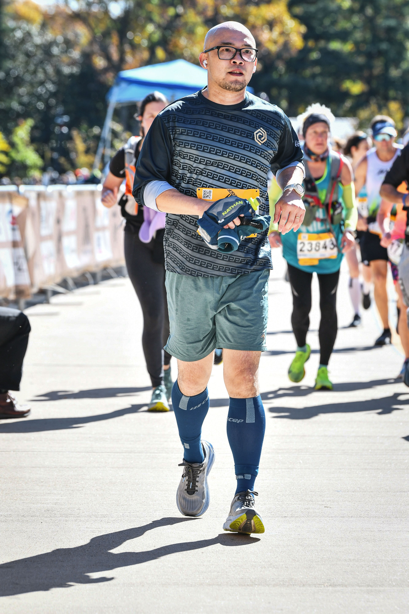

Contact Information

Cheng Li
Assistant Professor
Department of Biological & Ecological Engineering
Oregon State University
Gilmore Hall, 124 SW 26th Street
Corvallis, OR 97331
husband, dad to 3 cats, weight lifter, runner
Email: Cheng.Li@Oregonstate.edu
Education
-
Ph.D. in Biological & Ecological Engineering, Oregon State University, 2017
Dissertation: Electrical Conductivity in Mixed-species Biofilms for Enhancing Energy Generation in Anaerobic Microbial Systems
Committee: Hong Liu (advisor), Frank Chaplen, Chih-hung Chang, Mark E. Dolan, Kaichang Li - M.S. in Agriculture, McNeese State University, 2010
- B.S. in Life Science, South China Agricultural University, 2006
Professional Experience
- 2025–Present: Assistant Professor, Department of Biological and Ecological Engineering, Oregon State University
- 2023–2025: Assistant Professor of Integrated Science and Technology, School of Integrated Science, James Madison University
- 2023–Present: Courtesy Faculty, College of Earth, Ocean, and Atmospheric Sciences, Oregon State University
- 2022–2023: Senior Research Associate I, College of Earth, Ocean, and Atmospheric Sciences, Oregon State University
- 2019–2021: Faculty Research Associate, College of Earth, Ocean, and Atmospheric Sciences, Oregon State University
- 2017–2019: Postdoctoral Research Associate, College of Earth, Ocean, and Atmospheric Sciences, Oregon State University
- 2016–2017: Co-advisor, Minorities in Agriculture, Natural Resources, and Related Sciences, Oregon State University